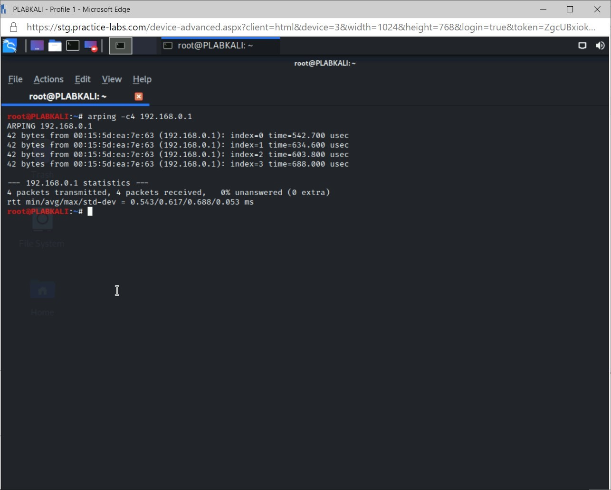
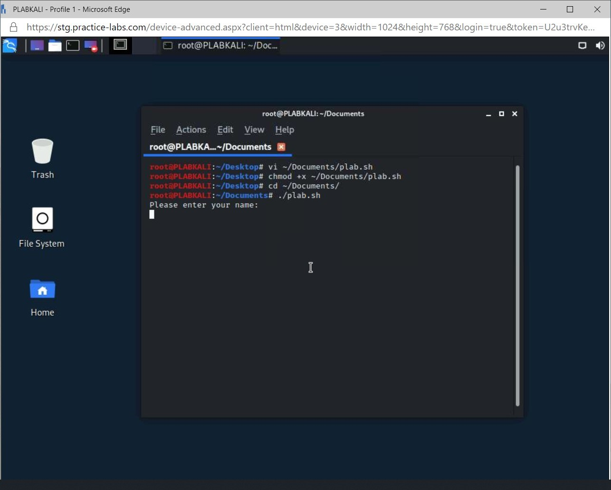
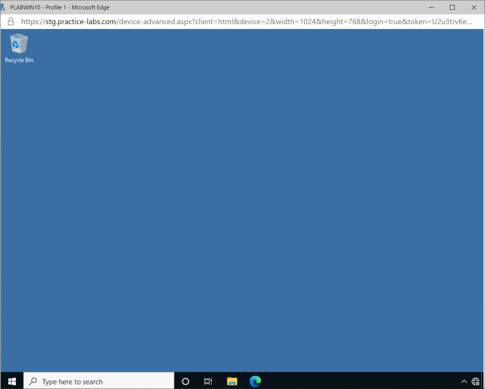
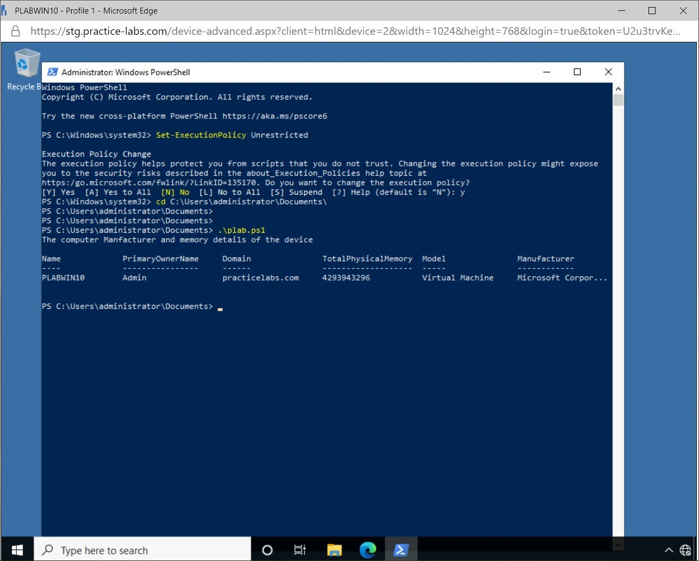
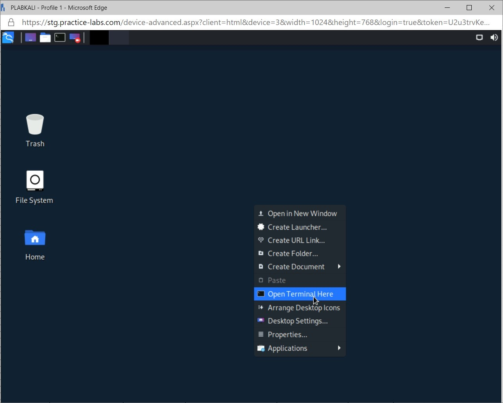

Introduction
bb1840e4-5425-49a3-9d75-477b8f016ff8
Welcome to the Network Security Assessment Tools Practice Lab. In this module, you will be provided with the instructions and devices needed to develop your hands-on skills.
dc640c20-9434-45ea-b7c2-6d4d6a196bfc
Learning Outcomes
In this module, you will complete the following exercises:
- Exercise 1 - Network Reconnaissance and Discovery
- Exercise 2 - Information Gathering
- Exercise 3 - File Manipulation
- Exercise 4 - Shell and Script Environments
- Exercise 5 - Packet Capture and Replay
- Exercise 6 - Forensics
- Exercise 7 - Exploitation Frameworks, Password Crackers and Data Sanitization
After completing this module, you should be able to:
- Learn Network Discovery and Reconnaissance Techniques using Tools like nmap, traceroute etc.
- Identify File Manipulation Attacks and Learn Shell Scripts
- Explain the Different Forensic Tools
- Explain Packet Capture and Replay
- Explain Frameworks used for Exploiting Vulnerabilities and Learn Data Sanitization
Exam Objectives
The following exam objectives are covered in this module:
4.1 Given a scenario, use the appropriate tool to assess organizational security.
- Network Reconnaissance and Discovery
- File Manipulation
- Shell and Script Environments
- Packet Capture and Replay
- Forensics
- Exploitation Frameworks
- Password Crackers
- Data Sanitization
Note: Our main
focus is to cover the practical, hands-on aspects of the exam
objectives. We recommend referring to course material or a search engine
to research theoretical topics in more detail.
Lab Duration
It will take approximately 1 hour to complete this lab.
c6fa62a3-1a00-4052-8104-258e8cbaa187
Help and Support
For more information on using Practice Labs, please see our Help and Support page. You can also raise a technical support ticket from this page.
Click Next to view the Lab topology used in this module.
d2c53300-f951-45a9-9aa4-3d4ecae69e11
Lab Topology
During your session, you will have access to the following lab configuration.

Depending on the exercises, you may or may not use all
of the devices, but they are shown here in the layout to get an overall
understanding of the topology of the lab.
- PLABDC01 - Windows Server 2019 (Domain Controller)
- PLABDM01 - Windows Server 2019 (Domain Member Server)
- PLABWIN10 - Windows 10 (Domain Member Workstation)
- PLABKALI - Kali 2019.4 (Stand-alone device)
Click Next to proceed to the first exercise.
<
Home |
README >
CompTIA Security+ Practice Labs
Exercise 1 - Network Reconnaissance and Discovery
In this exercise, we will learn in detail about network
reconnaissance and discovery using network security assessment tools.
Network reconnaissance helps gather information about the target system
or infrastructure and attempt specific attacks on the network.
The following is a list of the most commonly used tools for network host discovery and reconnaissance.
Tracert/traceroute
The traceroute command is used on Windows systems, and
it is used to show how a host connects to a remote host or system on the
network. It also displays the path and time the communication takes to
reach the remote host. Similarly, on Linux systems, the tracert command
can be used for the same purpose.
nslookup/dig
The nslookup command is used to query DNS records using
a Windows device. The Dig command is the Linux equivalent for nslookup.
It is used to query individual DNS records or all DNS records in a
domain and can be used to gather more information about the domain, such
as the IP address of the DNS server.
ipconfig/ifconfig
The ipconfig command is used to obtain information
about a host. The command shows the IP address, subnet mask, gateway and
DNS server information on the network configuration. The Linux
equivalent for ipconfig is ifconfig.
nmap
Nmap is an open source scanner used to scan hosts for
vulnerabilities and open ports. It can also be used to fingerprint
remote hosts to determine the operating systems they run, which may
reveal vulnerabilities that can be exploited.
Ping/pathping
Ping command can be used across platforms and uses ICMP
(Internet Control Message Protocol) to communicate with hosts. It is
used to check if remote hosts are reachable on the network. The pathping
command can be used on Windows devices to determine more in detail
information on the network statics, for example, the delay it takes to
communicate to specific routers on the network.
Hping
Hping is similar to ping but uses TCP/IP packets to
check connectivity using Linux devices. It is commonly used for testing
networks, firewalls and security auditing.
Netstat
Netstat command is used to look at the current
communication on a host. It also helps in identifying open ports and
established connections. It is most often used for troubleshooting to
determine if a host is listening on specific ports.
Netcat
Netcat is a network troubleshooting tool used to
identify networks and scan for open ports. It works on UDP or TCP and
can be used to initiate a connection to ports.
Learning Outcomes
After completing this exercise, you should be able to:
- Explain Reconnaissance
- List Network Reconnaissance and Discovery Tools
- Gather Information Using Tools
Your Devices
You will be using the following device in this lab. Please power this on now.
- PLABKALI - Kali 2019.4 (Stand-alone device)

Task 1 - Host Discovery using Linux commands
Host Discovery is an information gathering technique
and is carried out at the beginning of network reconnaissance. Host
discovery is carried out using different network assessment tools like
nmap, netstat, traceroute etc.
In this task, Network Reconnaissance tools will be used to gather more information about hosts on the network.
Step 1
Connect to the PLABKALI device.
Figure 1.1 Screenshot of PLABKALI: Displaying connecting to the Kali device
Step 2
Log in to the device using the following credentials:
Username: root
Password: Passw0rd
Figure 1.2 Screenshot of PLABKALI: Displaying logging into the Kali device.
Step 3
Right-click on the Desktop and select Open Terminal Here.
Figure 1.3 Screenshot of PLABKALI: Displaying opening a terminal window.
Step 4
In the terminal command, type the following and press Enter.
ifconfig
Figure 1.4 Screenshot of PLABKALI: Displaying executing the command in the terminal window.
Note: The IP
address, subnet mask and additional network information can be seen from
the output. This gathered information can be used to gather more
information about the network.
Step 5
In the Terminal window, type the following command and press Enter.
nmap -sS 192.168.0.0/24
Figure 1.5 Screenshot of PLABKALI: Displaying executing the command in the terminal window.
Note: After
gathering network information, the nmap tool can be used to scan the
network for hosts. As can be seen, after the command has been executed,
the different hosts with their IP addresses and Operating systems are
displayed. Additional information can also be gathered, for example, the
open ports on the discovered hosts. Clear the terminal window, typing
clear and pressing Enter.
Step 6
In the Terminal window, type the following command and press Enter.
dig practicelabs.com
Figure 1.6 Screenshot of PLABKALI: Displaying executing the command in the terminal window.
80e3ace3-3818-477e-9d50-9fdfea66eb75
Note: By using
the dig command, more information about the specific domain is gathered.
Notice that the IP address for practicelabs.com is displayed.
<
Home |
README >
CompTIA Security+ Practice Labs
Exercise 2 - Information Gathering
Gathering information on different components of the
network is essential to ensure the security of it. Different types of
information gathering tools are available for Cyber Security
professionals, gathering crucial information about the network.
The following is a list of common tools used by Cyber Security Professionals:
IP scanners
IP scanners are tools that scan for IP addresses and
other information of the devices on the network. Several different IP
scanner applications are available that can be used to detect
information of devices that are connected to the network.
Arp
Arp command is used to display the Address Resolution
table on a host. The Address Resolution table is used by a host to store
information of other hosts on the network. This information can be used
to determine if there any unauthorized hosts connected to the network.
Curl
The curl command is used for transferring data over
networks using specific protocols, for example, HTTP, HTTPS or FTP. This
command can be used without user intervention and is ideal when used in
shell scripting. It is specifically used on Linux devices.
The Harvester
Penetration testers use this tool for footprinting of
the network infrastructure. It can gather information on emails,
subdomains, hosts, employee names and open ports.
sn1per
sn1per is an automated scanner used during a
penetration test to enumerate and scan for network vulnerabilities. You
can automate the process of collecting data for exploration using
sn1per.
Scanless
Scanless is an automated port scan scrapper. It is a
command line utility for vulnerability exploitation that also performs
an open port scan.
dnsenum
This tool is used for DNS enumeration to discover IP
blocks. DNS Enumeration is the process of collecting DNS information of a
specific company, which can then be used to evaluate the company's
security posture.
Cuckoo
Cuckoo is a malware analysis tool. It provides the following details as the result of the analysis:
- Native functions and Windows API calls stack
- Copies of created files and removed from the file system
- Memory dump of processes
- Full memory dump of the target machine
- Screenshots of the desktop during the overall execution of the malware analysis
- Network dump created by the machine used for the analysis.
Learning Outcomes
After completing this exercise, you should be able to:
- List information gathering tools
- Gather Information Using Tools
Your Devices
You will be using the following devices in this lab. Please power these on now.
- PLABWIN10 - Windows 10 (Domain Member Workstation)
- PLABKALI - Kali 2019.4 (Stand-alone device)
Task 1 - Information Gathering Tools
In this task, different information gathering tools
will be used to better understand how to gather information about
devices on the network.
Step 1
Connect to PLABWIN10
Figure 2.1 Screenshot of PLABWIN10: Displaying the desktop of the device.
Step 2
Right-click on Start and select Run
Figure 2.2 Screenshot of PLABWIN10: Displaying opening run menu.
Step 3
In the Run window, type cmd and click OK.
 Figure 2.3 Screenshot of PLABWIN10: Displaying opening the command prompt window.
Figure 2.3 Screenshot of PLABWIN10: Displaying opening the command prompt window.
Step 4
In the Command Prompt window, type the following and press Enter:
arp -a
Figure 2.4 Screenshot of PLABWIN10: Displaying executing the command in Command prompt.
Note: The arp -a
command displays the Address Resolution Protocol table of the device.
From the command's output, the IP and MAC addresses of the devices that
this device has been communicating can be seen.
Step 5
Connect to PLABKALI
Figure 2.5 Screenshot of PLABKALI: Displaying the login screen of the Kali device.
Step 6
Sign in to the device using the following credentials:
Username: root
Password: Passw0rd
 Figure 2.6 Screenshot of PLABKALI: Displaying signing into the Kali device.
Figure 2.6 Screenshot of PLABKALI: Displaying signing into the Kali device.
Step 7
Right-click on the Desktop and select Open Terminal Here
Figure 2.7 Screenshot of PLABKALI: Displaying opening the terminal window.
Step 8
In the terminal window, type the following and press Enter:
dnsenum -enum practicelabs.com
Figure 2.8 Screenshot of PLABKALI: Displaying executing the command in the terminal window.
Note: The dnsenum command
is used to gather more information about an organization’s DNS. After
executing the command, the DNS server for the practicelabs.com domain
can be seen as plabdc01 with the associated IP address. In the terminal
window, type clear and press Enter to clear the terminal window.
Step 9
In the terminal window, type the following and press Enter:
arping -c4 192.168.0.1
Figure 2.9 Screenshot of PLABKALI: Displaying executing the command in the terminal window.
80e3ace3-3818-477e-9d50-9fdfea66eb75
Note: The arping
command is used to resolve a MAC address from an IP address. The MAC
address of the DNS server for the practicelabs.com domain is displayed
here. Close the terminal window.
<
Home |
README >
CompTIA Security+ Practice Labs
Exercise 3 - File Manipulation
Linux operating systems provides several commands and
programs for file operations and manipulation. To ensure the integrity
of files, a Cyber Security professional will need to view and change
files.
The following is a list of the most commonly used Linux commands for file manipulation:
head
The head command will display the first ten lines of a
file if no additional parameters are specified. To display a specific
number of lines in a file, the -n parameter can be used to display the specified number of lines from the beginning of the file.
tail
The tail command lets you display the last ten lines of any file. Similar to the head command, the tail command also allows the ‘n’ option to display the specified number of lines.
cat
The ‘cat‘ command has various uses ranging from displaying the content of a file to adding lines to a file.
grep
Grep is a Linux command line tool used to search for a string of characters in a specified file.
chmod
chmod is the command used on Linux operating systems to change permissions of files.
logger
The logger command allows adding messages to the /var/log/syslog file from the command line or other files.
Learning Outcomes
After completing this exercise, you should be able to:
- Explore File Manipulation and Commands Used for File Operations
Your Devices
You will be using the following device in this lab. Please power this on now.
- PLABKALI - Kali Linux 2019.4

Task 1 - File Operations and Manipulation
In a file manipulation attack, the attacker modifies
the contents or other attributes like extensions and file names to cause
incorrect processing. This leads to unstable states and unauthorized
exposure of sensitive otherwise protected information. In extreme cases,
file manipulations can also lead to remote code execution and a
complete system takeover.
Step 1
Connect to PLABKALI and sign in with the following credentials:
Username: root
Password: Passw0rd
Figure 3.1 Screenshot of PLABKALI: Displaying logging into the device.
Step 2
Right-click on the Desktop and select Open Terminal Here.
Figure 3.2 Screenshot of PLABKALI: Displaying opening a terminal window.
Step 3
In the terminal window, type the following command and press Enter:
ls -l ~/Documents
Figure 3.3 Screenshot of PLABKALI: Displaying the terminal window with the executed command.
The ls -l command lists the contents of the Documents folder. From the results, a file called test.txt can be seen.
Step 4
In the terminal window, type the following and press Enter:
cat ~/Documents/test.txt
Figure 3.4 Screenshot of PLABKALI: Displaying executing the cat command displaying the content of the file.
Note: The content of the test.txt file is displayed using the cat command. Note there are several lines in the file.
Step 5
In the terminal window, enter the following command and press Enter:
head -n5 ~/Documents/test.txt
Figure 3.5 Screenshot of PLABKALI: Displaying executing the head command
Note: By
executing the head command with the -n5 parameter, the file's first five
lines are displayed. Type clear in the terminal window and press Enter for a clear view of the terminal window.
Step 6
In the terminal window, type the following and press Enter:
tail -n4 ~/Documents/test.txt
Figure 3.6 Screenshot of PLABKALI: Displaying executing the tail command in the terminal window.
Note: The last four lines of the test.txt file is displayed using the specified command.
Step 7
In the terminal window, type the following and press Enter:
grep -w Practice ~/Documents/test.txt
Figure 3.7 Screenshot of PLABKALI: Displaying executing the grep command in the terminal window.
Note: By executing the grep command with -w parameter lines, the test.txt document containing the word Practice is displayed.
Step 8
In the terminal window, type the following and press Enter:
ls -l ~/Documents/test.txt
 Figure 3.8 Screenshot of PLABKALI: Displaying executing the command in the terminal window.
Note: Executing the ls -l command on the test.txt file displays the specified file's file permissions.
Figure 3.8 Screenshot of PLABKALI: Displaying executing the command in the terminal window.
Note: Executing the ls -l command on the test.txt file displays the specified file's file permissions.
Step 9
In the terminal window, type the following and press Enter:
chmod +x ~/Documents/test.txt
Figure 3.9 Screenshot of PLABKALI: Displaying executing the command in the terminal window.
Step 10
In the terminal window, type the following and press Enter:
ls -l ~/Documents/test.txt
Figure 3.10 Screenshot of PLABKALI: Displaying the file permissions of the test.txt file.
80e3ace3-3818-477e-9d50-9fdfea66eb75
Note: The chmod
command changes a file’s file permission. By executing the command with
the +x parameter, it changed the file to an executable file.
<
Home |
README >
CompTIA Security+ Practice Labs
Exercise 4 - Shell and Script Environments
A shell in operating systems is a command interpreter.
Its function is to facilitate communication between commands that are
executed and the kernel of the operating system. These commands are
executed in the shell, for example, starting an application. Various
shells are available and are specific to the operating system. For
example, the bash shell is native to certain Linux operating systems,
and powershell is native to Windows operating systems.
These specific shell environments can be used to
create files referred to as scripts. Scripts are used to automate the
repeated process but can also be used for malicious intent. A Security
professional needs to be familiar with different shell and scripting
environments.
SSH
Secure Shell (SSH) is a protocol used to secure remote
network communications. It is widely used by server administrators to
maintain Linux-based servers. SSH uses public-key cryptography. By
default, it operates over port 22. SSH is used to sign into a secure
shell on a remote system.
PowerShell
PowerShell is a cross-platform task automation and
configuration management framework, consisting of a command-line shell
and scripting language. It is most commonly used on Windows operating
systems.
Python
The Python scripting language can be used to assess a
Linux system's security posture by creating an automated script. The
script can be set to collect system logs of the system, for example, for
an Apache web server, which can then be reviewed regularly by an
administrator to ensure there is no malicious activity.
OpenSSL
OpenSSL is a cryptographic library that provides an
open-source implementation of the Secure Sockets Layer (SSL) and
Transport Layer Security (TLS) protocols.
The library includes tools for generating RSA private
keys and Certificate Signing Requests (CSRs), checksums, managing
certificates and performing encryption/decryption. OpenSSL is written in
C, but wrappers are available for a wide variety of computer languages.
The openssl program is a command line tool
for using the different cryptography functions of
OpenSSL's crypto library from the Shell. It can be used for:
- Creation and maintenance of private keys, public keys and parameters
- Public key cryptographic functions
- Generate X.509 certificates, CSRs and CRLs
- Arrive at Message Digests
- Encryption and Decryption with Ciphers
- SSL/TLS Client and Server Verification
- Managing S/MIME signed or encrypted mail
- Time Stamp requests, creation and validation
Learning Outcomes
After completing this exercise, you should be able to:
- Explore Different Shell Scripting Environments
Your Devices
You will be using the following devices in this lab. Please power these on now.
- PLABWIN10 - Windows 10 (Domain Member Workstation)
- PLABKALI - Kali 2019.4 (Stand-alone device)

Task 1 - Shell commands
In this task, different shell scripting environments will be explored.
Step 1
Connect to PLABWIN10
Figure 4.1 Screenshot of PLABWIN10: Displaying the Desktop.
Step 2
Click Start and type the following:
PuTTY
Press Enter.
Figure 4.2 Screenshot of PLABWIN10: Displaying opening the PuTTY application.
Step 3
In the PuTTY Configuration window, enter the following in the Host Name (or IP address) field:
192.168.0.4
Click Open
Figure 4.3 Screenshot of PLABWIN10: Displaying creating an SSH session to the PLABKALI device.
Step 4
In the PuTTY Security Alert pop-up window, click Yes.
Figure 4.4 Screenshot of PLABWIN10: Screenshot of creating an SSH connection to the PLABKALI device.
Step 5
In the PuTTY login screen, sign in with the following credentials:
Username: plabadmin
Password: Passw0rd
Figure 4.5 Screenshot of PLABKALI: Displaying creating an SSH session to the Kali device.
Step 6
In the PuTTY SSH session, type the following and press Enter:
su -
Figure 4.6 Screenshot of PLABWIN10: Logged into the PLABKALI device using SSH.
Step 7
In the Password field, enter the following and press Enter:
Passw0rd
Figure 4.7 Screenshot of PLABKALI: Displaying connecting to the PLABKALI device using SSH.
Note: The PuTTY
application is used to establish an SSH session to the PLABKALI linux
device. System Administrators can use this to remotely manage linux
devices from a Microsoft device.
Step 8
In the PuTTY SSH session, type the following and press Enter:
hostname
Figure 4.8 Screenshot of PLABWIN10: Displaying connected to the PLABKALI device using an SSH connection.
Note: By
executing the hostname command, it displays that a successful SSH
connection has been made to the device. The su - command changes the
current user to the root user of the device. This is the same as an
administrator account on a Windows device.
Task 2 - Linux Scripting techniques
Scripts can be used to automate repetitive tasks that
need to be performed, for example, creating a script to automate a
backup in a Linux environment or creating several user accounts in a
Microsoft environment.
Malicious users can also use scripts to damage systems
if it is executed unintentionally by a user. A Cyber Security
professional needs to be able to automate a specific task by using
scripts.
In this task, different scripts will be created in a Windows and Linux environment.
Step 1
Connect to PLABKALI and sign in with the following credentials:
Username: root
Password: Passw0rd
Figure 4.9 Screenshot of PLABKALI: Displaying logging in to the Kali device.
Step 2
Right-click on the desktop and select Open Terminal here
Figure 4.10 Screenshot of PLABKALI: Displaying opening the terminal window from the Desktop.
Step 3
In the terminal window, type the following and press Enter:
vi ~/Documents/plab.sh
Figure 4.11 Screenshot of PLABKALI: Displaying creating a new script using the terminal window.
Step 4
In the Vi text editor, press ‘i’ and enter the following information:
#!/bin/bash
echo -e “Please enter your name here:”
read name
echo “Have a nice day $name”
Figure 4.12 Screenshot of PLABKALI: Displaying creating a script file on a Linux device.
Step 5
Press ‘ESC’ followed by the following:
:wq
Press Enter.
Figure 4.13 Screenshot of PLABKALI: Displaying creating a script file on a Linux device.
Step 6
In the terminal window, type the following and press Enter:
chmod +x ~/Documents/plab.sh
Figure 4.14 Screenshot of PLABKALI: Displaying creating a script file on a Linux system.
Step 7
In the terminal window, type the following and press Enter after each line:
cd ~/Documents
./plab.sh
Figure 4.15 Screenshot of PLABKALI: Displaying creating a script file on a Linux device.
Step 8
In the terminal window, enter your name and press Enter:
Louis
Figure 4.16 Screenshot of PLABKALI: Executing the previously created script.
Note: After the
script file has been created, it needs to be set to an executable file.
Any linux command can be added to a script file to automate a process.
Task 3 - Powershell Scripting techniques
Similar to a Linux script, Powershell on a windows device can be used to automate a process.
In this task, a powershell script will be created.
Step 1
Connect to PLABWIN10.
Figure 4.17 Screenshot of PLABWIN10: Screenshot of PLABWIN10: Displaying the desktop.
Step 2
Click Start and type the following, and press Enter.
Notepad
Figure 4.18 Screenshot of PLABWIN10: Displaying opening the Notepad application.
Step 3
In Notepad, add the following lines:
Write-host “The computers manufacturer and memory details of the device”
Get-CimInstance -ClassName Win32_ComputerSystem
Figure 4.19 Screenshot of PLABWIN10: Displaying creating a Powershell script.
Step 4
In Notepad, click File and select Save as
 Figure 4.20 Screenshot of PLABWIN10: Displaying creating a Powershell script.
Figure 4.20 Screenshot of PLABWIN10: Displaying creating a Powershell script.
Step 5
In the Save as window, select Documents in the left pane
Figure 4.21 Screenshot of PLABWIN10: Displaying saving the powershell script in the Documents folder.
Step 6
In the drop-down in the Save as type, field select All files.
 Figure 4.22 Screenshot of PLABWIN10: Displaying saving the powershell script.
Figure 4.22 Screenshot of PLABWIN10: Displaying saving the powershell script.
Step 7
In the File name field, enter the following and click Save.
plab.ps1
 Figure 4.23 Screenshot of PLABWIN10: Displaying saving the Powershell script.
Figure 4.23 Screenshot of PLABWIN10: Displaying saving the Powershell script.
Step 8
Close Notepad.
Figure 4.24 Screenshot of PLABWIN10: Displaying closing the Notepad application.
Step 9
Right-click on Start and select Windows Powershell (Admin).
Figure 4.25 Screenshot of PLABWIN10: Displaying opening Windows Powershell.
Step 10
In the User Account Control pop-up window, select Yes
Figure 4.26 Screenshot of PLABWIN10: Displaying opening Powershell.
Step 11
In the Windows Powershell window, enter the following and press Enter:
Set-ExecutionPolicy Unrestricted
Figure 4.27 Screenshot of PLABWIN10: Displaying enabling script execution in Powershell.
Note: By default,
as a security measure on Windows devices, the execution of scripts is
prevented by executing the command script execution is enabled.
Step 12
In the Execution Policy Change prompt, press ‘Y’.
Figure 4.28 Screenshot of PLABWIN10: Displaying enabling scripts to run on a Windows device.
Step 13
In the Powershell window, type the following and press Enter.
cd C:\Users\administrator\Documents
Figure 4.29 Screenshot of PLABWIN10: Displaying executing the powershell script.
Step 14
In the Powershell window, type the following and press Enter.
.\plab.ps1
Figure 4.30 Screenshot of PLABWIN10: Displaying executing the previously created script.
a5adbee1-b3d4-422f-907b-2999d763f275
Note: After
executing the script that was created, it displays information about the
virtual device. A script can be used to automate repetitive tasks.
<
Home |
README >
CompTIA Security+ Practice Labs
Exercise 5 - Packet Capture and Replay
A Security professional needs to assess its network
security posture by analyzing the traffic that traverses across the
network. Several packet capturing applications are available to analyze
network traffic.
Packet replay refers to capturing network traffic over
a specified period of time and then saving it, which can then be
replayed over a dedicated network interface for analysis. You can choose
from several packet replay applications that are available to perform
this function such as tcpreplay.
In this exercise, different packet and replay capturing applications will be discussed and their different uses.
Learning Outcomes
After completing this exercise, you should be able to:
- Explain Packet Capture and Replay
Your Devices
You will be using the following devices in this lab. Please power these on now.
- PLABWIN10 - Windows 10 (Domain Member Workstation)
- PLABKALI - Kali Linux 2019.4

Packet capture utility is also called a protocol
analyzer or a sniffer. It is a tool to capture and analyze network
communications.
Tcpreplay
Tcpreplay is used to modify and replay network
traffic, which is already captured by tools like tcpdump and Wireshark.
It allows interception of traffic as client or server, rewrite Layer 2, 3
and 4 packets, and replay the traffic back onto the network. Tcpreplay
allows both single and dual NIC modes for validating both sniffing and
in-line devices.
Tcpreplay is used by different firewalls, IDS, IPS,
NetFlow and other networking vendors, enterprises, universities, labs
and open source projects. Tcpreplay is intended to work with network
hardware and usually does not penetrate deeper than Layer 2 of the OSI
model.
Tcpdump
Tcpdump is a command-line packet analyzer that can capture network communication. It is a cross-platform network analysis tool.
Wireshark
Wireshark is a protocol interpreter. Wireshark has a rich functionality which includes the following:
- An extensive inspection of hundreds of protocols, with more being included all the time
- Live capture and offline review
- Standard three-pane packet browser
- Captured network data can be interpreted via a GUI or via the TTY-mode TShark utility
- Very powerful display filters in the industry
- Rich VoIP analysis
- Gathers files compressed with gzip and can be decompressed on the fly
- Live data can be read from Ethernet, IEEE 802.11,
PPP/HDLC, ATM, Bluetooth, USB, Token Ring, Frame Relay, FDDI, and others
(depending on your platform)
- Coloring rules can be implemented to the packet list for quick, intuitive analysis
- Output can be sent to XML, PostScript, CSV, or plain text
- Decryption support for various protocols, including IPsec, ISAKMP, Kerberos, SNMPv3, SSL/TLS, WEP, and WPA/WPA2
- Read and or write many various capture file formats:
tcpdump (libpcap), Pcap NG, Catapult DCT2000, Cisco Secure IDS iplog,
Microsoft Network Monitor, Network * General Sniffer (compressed and
uncompressed), Sniffer Pro, and NetXray, Network Instruments Observer,
NetScreen snoop, Novell LANalyzer, RADCOM WAN/LAN Analyzer,
Shomiti/Finisar Surveyor, Tektronix K12xx, Visual Networks Visual
UpTime, WildPackets EtherPeek/TokenPeek/AiroPeek, and much more
Task 1 - Packet Capture using Wireshark
In this task, the Wireshark packet capturing application will be used to capture and analyze traffic generated on the network.
Step 1
Connect to PLABKALI and sign in using the following credentials:
Username: root
Password: Passw0rd
Figure 5.1 Screenshot of PLABKALI: Displaying logging into the device.
Step 2
Right-click on the Desktop and select Open Terminal Here.
Figure 5.2 Screenshot of PLABKALI: Displaying opening a terminal window.
Step 3
In the terminal window, type the following and press Enter
wireshark
 Figure 5.3 Screenshot of PLABKALI: Displaying opening the Wireshark application.
Figure 5.3 Screenshot of PLABKALI: Displaying opening the Wireshark application.
Step 4
In the Wireshark application ensure eth0 is selected and select Start capturing packets.
Figure 5.4 Screenshot of PLABKALI: Displaying starting to capture network traffic with the Wireshark application.
Step 5
Connect to PLABWIN10
Figure 5.5 Screenshot of PLABWIN10: Displaying the Desktop.
Step 6
Right-click on Start and select Windows Powershell.
Figure 5.6 Screenshot of PLABWIN10: Displaying opening Windows Powershell.
Step 7
In the Windows Powershell window type the following and press Enter.
ping 192.168.0.4
Figure 5.7 Screenshot of PLABWIN10: Displaying creating network traffic.
Step 8
Reconnect to PLABKALI.
Figure 5.8 Screenshot of PLABKALI: Displaying the Wireshark application capturing network.
80e3ace3-3818-477e-9d50-9fdfea66eb75
Note: The Wireshark application captured network traffic that was generated by the PLABWIN10 device.
Step 9
Close the Wireshark application.
Figure 5.9 Screenshot of PLABKALI: Displaying closing the Wireshark application.
Step 10
In the Unsaved packets… pop-up window, select Stop and Quit without saving.
Figure 5.10 Screenshot of PLABKALI: Displaying closing the Wireshark application.
Keep all devices that you have powered on in their current state and proceed to the review section.
<
Home |
README >
CompTIA Security+ Practice Labs
Exercise 6 - Forensics
Data forensics can be defined as investigating to what changes have been made to data and if it was legitimate or not.
Basic concepts of forensics include order of volatility, chain of custody, legal hold and data acquisition.
The order of volatility is the order in which an
organization should collect forensic evidence. Since highly volatile
data can be easily lost, the most volatile data should be collected
first and the least volatile data should be collected last.
In scenarios where proof might be used in civil or
criminal litigation, it is vital for an organization to form a chain of
custody, also known as a chain of evidence. This documents the location
of the evidence from the moment it is gathered to the moment it appears
in court. This can include the police who collect it, the evidence
technicians who process it and the lawyers who use it in court.
A legal hold is a method that an organization might
use to store all relevant information when litigation is expected. The
legal hold process is typically initiated by a communication from legal
counsel to an organization to suspend the normal disposal of records,
such as the recycling of tape backups or the archiving or deletion of
data.
Learning Outcomes
After completing this exercise, you should be able to:
Your Devices
This exercise contains supporting materials for Security+.

Task 1 - Forensics
Based on the type of media, there are various methods an organization can use to retrieve data for forensic analysis purposes.
DD
A DD file is the image file generated out of dd
commands. It is a powerful and easy command-line used to create disk
images, copy files, etc. of hard drives on Unix or Linux Operating
System.
Memdump
This program dumps system memory to the standard output stream.
WinHex
WinHex is a commercial disk editor and universal hexadecimal editor used for data recovery and digital forensics.
FTK Imager
FTK Imager is an imaging tool that lets you preview
data. It evaluates electronic evidence to identify if further review
with another forensic tool is needed.
Autopsy
Autopsy is a Windows-based desktop
digital forensics tool that is free, open-source and has all
of the features you would normally find in commercial
digital forensics tools.
7429868b-128c-4069-95a9-7246a6a9e5a3
<
Home |
README >
CompTIA Security+ Practice Labs
Exercise 7 - Exploitation Frameworks, Password Crackers and Data Sanitization
Exploitation frameworks are tools to facilitate
exploits. They enable you to choose the exploit and what happens after
you gain control of the device via the exploit. For example, a framework
might try to exploit a known buffer overflow vulnerability. These tools
are useful for hackers but also for internal IT security teams to test
their systems.
A password cracker tries to convert hashed passwords
into plain text. It can work against operating systems, directories,
databases or other systems that store passwords in a hashed format.
Password crackers are generally used in an offline model, running for a
long period of time against the hashes.
Learning Outcomes
After completing this exercise, you should be able to:
- Perform Password Cracking Using Tools
- Explain Data Sanitization
Your Devices
You will be using the following device in this lab. Please power this on now.
- PLABKALI - Kali Linux 2019.4

The following is a list of most commonly used password cracking applications available.
Crunch tool
This password attack tool creates a wordlist where
standard or customized character set can be specified for usage. It
creates all the possible password combinations in a very quick process.
It can also break up the end result by file size and support in case of
any challenge. It supports numbers and symbols. Crunch supports
uppercase and lowercase letters and also provides a status report of
multiple files.
Hashcat tool
The hashcat is one of the most favored and advanced
password recovery tools. It supports five distinct attack modes for 300
plus highly-optimized hashing algorithms. It can support both CPU and
GPU, as well as more hardware accelerators. It also helps to work on
distributed password cracking. It has various options to support
multiple parameters for password recovery.
Medusa tool
The Medusa tool is a brute-forcer login tool
supporting many services that allow for authentication from remote
systems. It supports multi thread-based parallel testing and modular
design that allows for brute force services.
Ncrack tool
A dynamic network authentication cracking tool that
helps to secure networks against password attacks. It looks for poor
passwords by testing their hosts and networking devices. It has numerous
components and works like the NMAP tool having a dynamic engine to work
on network feedback. It has fast and consistent auditing services for
multiple hosts. It is simple to use and has brute force attacks, timing
templates, and an interface for complete control of the network
processes. It supports protocols such as SSH, FTP, HTTPS, TELNET, IMAP,
SIP, SMB, PostgreSQL, MS-SQL, MySQL, MongoDB, and much more.
Ophcrack tool
Ophcrack is an opensource password cracking tool and
is based on rainbow tables. It has a graphical user interface as well as
a command-line interface and supports multiple platforms. It runs in
audit, brute force and debugging mode, loading hashes.
Wordlists utility
The wordlists is a password attack tool containing symlinks and word lists to password files in the Kali Linux distro.
Hydra tool
This password attack tool is a parallel login crack
with numerous attack protocols. It is very quick, reliable, and can be
customized for the inclusion of new modules. This tool can gather
unauthorized access remotely to a system. It works with Cisco AAA, Cisco
authorization, FTP, HTTPS GET/POST/PROXY, MY SQL etc.
Mimikatz tool
Mimikatz is a tool developed in C language that works
with windows security. It mines passwords, PINs, Hash codes, and
Kerberos tickets from host memory and saves it in a plain text file.
THC-pptp-bruter tool
This brute forcer tool works alongside pptp VPN
endpoints. It uses TCP port and works as an independent package. It
supports MS ChapV2 authentication and is verified against numerous Cisco
gateways and Windows files. This brute force tool attempts 300
passwords in a second and exploits a vulnerability in Microsoft
anti-brute-force operation.
Rsmangler tool
This tool obtains a wordlist and then does various
operations on it, just like the John the Ripper Tool. It takes a
collection of words, generates all of these changes and the acronym of
words, and then applies them to other mangles.
Data Sanitizing
When you need to dispose of storage devices, you need a
way to securely erase the data first. Data sanitization tools can
securely erase data so that it cannot be recovered. Many of the tools
overwrite data in several passes, sometimes with random data. With each
additional overwriting pass, the erasing becomes more permanent and,
therefore, more secure. In addition to sanitizing data, you can sanitize
entire hard drives too.
Task 1 - Working with John the Ripper
The John the ripper toolkit is quick and dependable.
It has numerous cracking modes, and it is customizable and configurable
according to your requirements. It provides other DES-based tripcodes
but must be configured.
In this task, you will learn to use the John the Ripper.
Step 1
Connect to the PLABKALI device and sign in with the following credentials
Username: root
Password: Passw0rd
Figure 7.1 Screenshot of PLABKALI: Displaying logging into the device.
Step 2
Right-click on the Desktop and select Open Terminal here
Figure 7.2 Screenshot of PLABKALI: Displaying opening a terminal window.
Step 3
In the terminal window, type the following and press Enter.
john /root/Documents/plabpassword
Figure 7.3 Screenshot of PLABKALI: Displaying John the Ripper to crack a captured password file.
80e3ace3-3818-477e-9d50-9fdfea66eb75
Note: John the
Ripper, password cracking utility was used to crack a previously hash
file. From the results, the username and password can be seen. The
password is very weak and did not take long to crack.
d31298f5-3011-4089-bf06-fbf08c44a7f9
Keep all devices that you have powered on in their current state and proceed to the review section.
Review
Well done, you have completed the Network Security Assessment Tools Practice Lab.
c6e74811-6d1f-4779-94c2-34fcca239022
997be118-10b6-4b2c-855b-36fa28bad373
047fd88d-7485-4a93-ab8f-da64a4114f91
aa683fe1-e887-4e10-a92c-8b9267bacd6a
0718c19e-bd4c-4694-acae-f0f865a8eef6
6f8579ac-4c84-42b9-8dec-647ee32170b9
3b188938-ea8f-473e-b2eb-dd6bb3e1e37d
08ce225e-c09f-4cf4-8db0-5105d5294489
aaaaaaaa-1111-1111-1111-193f35a24fe3
Summary
You have completed the following exercises:
- Exercise 1 - Network Reconnaissance and Discovery
- Exercise 2 - File Manipulation
- Exercise 3 - Shell and Script Environments
- Exercise 4 - Packet Capture and Replay
- Exercise 5 - Forensics
- Exercise 6 - Exploitation Frameworks, Password Crackers and Data Sanitization
You should now be able to:
- Explain Network Discovery and Reconnaissance Techniques Using Tools like nmap, traceroute etc.
- Identify File Manipulation Attacks and Learn Shell Scripts
- Explain the Different Forensic Tools
- Explain Packet Capture and Replay
- Explain Frameworks Used for Exploiting Vulnerabilities and Learn Data Sanitization
Feedback
067744a4-4299-4662-b5be-04dbb636a007
Shutdown all virtual machines used in this lab. Alternatively, you can log out of the lab platform.